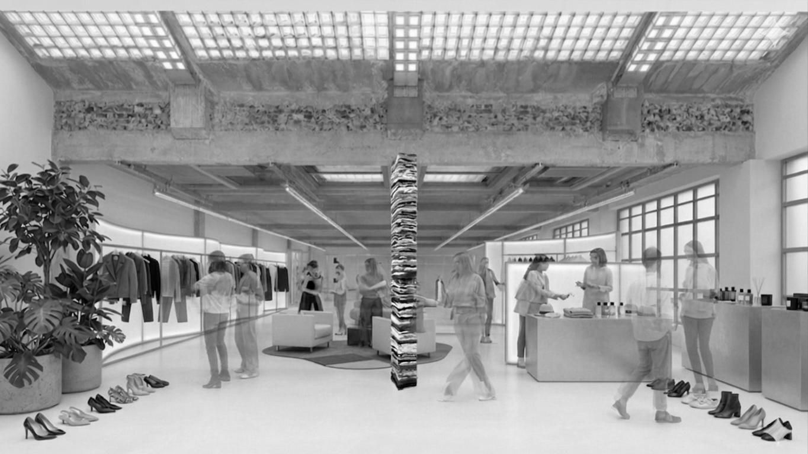

step 01 — 회수 신청
문 앞에
내놓기만
하면 됩니다
온라인으로 회수를 신청하면 지정된 날짜에 코르다가 직접 찾아갑니다.
가방에 담아 문 앞에 내놓으면 끝. 복잡한 절차 없이 간단하게 시작할 수 있습니다.
신청 즉시 corda 크레딧이 지급되며, 크레딧은 코르다 샵 전 매장에서 사용할 수 있습니다.

corda cycle
버려지는 대신 순환됩니다. 당신이 내놓은 옷 한 벌이 코르다 사이클을 통해 어떤 여정을 걷는지 보여드립니다.
journey
01
회수 신청
02
수거
03
코르다 사이클
입고 & 검수
04a
PB 제작
모듈 투입
04b
빈티지
블록체인 추적
04c
친환경 소각
step 01 — 회수 신청
온라인으로 회수를 신청하면 지정된 날짜에 코르다가 직접 찾아갑니다.
가방에 담아 문 앞에 내놓으면 끝. 복잡한 절차 없이 간단하게 시작할 수 있습니다.
신청 즉시 corda 크레딧이 지급되며, 크레딧은 코르다 샵 전 매장에서 사용할 수 있습니다.
step 02 — 수거
코르다의 파트너 물류망을 통해 전국 어디서든 수거가 이루어집니다. 수거된 옷은 전용 라벨이 부착되어 고유 ID가 생성되고, 이후 모든 과정이 추적됩니다.

step 03 — 입고 & 검수
입고된 옷은 상태·소재·브랜드 등의 기준으로 정밀 검수를 거쳐 세 가지 경로 중 하나로 배정됩니다.
오염·파손·소재 열화 등을 기준으로 A / B / C 등급으로 분류합니다.
천연섬유 / 혼방 / 합성섬유 비율을 파악하여 재활용 가능 여부를 판단합니다.
검수 결과에 따라 PB 제작 · 빈티지 리셀 · 친환경 소각 중 최적 경로로 배정됩니다.
step 04 — 세 가지 순환 경로
04a
private brand
상태가 좋은 원단은 코르다 자체 브랜드(PB)의 새 제품으로 재탄생합니다. 수거된 옷에서 추출한 원단을 재가공하여 전혀 새로운 아이템이 됩니다.
04b
vintage resell
희소성 있는 빈티지 아이템은 코르다 샵에서 리셀됩니다. 고객이 맡긴 옷이 어디서 누구에게 팔렸는지, 블록체인에 기록되어 끝까지 추적할 수 있습니다.
04c
eco disposal
재사용이 불가능한 섬유는 일반 매립 대신 친환경 열에너지 회수 방식으로 처리됩니다. 소각 과정에서 발생하는 열에너지는 지역 시설에 공급되어 자원으로 전환됩니다.
pb 모듈 시스템
코르다 PB 제품 1개는 서로 다른 3명의 고객에게서 수거된 원단으로 구성됩니다. 각자의 옷이 새로운 연결을 만듭니다.
고객 A
재킷 원단
고객 B
드레스 원단
고객 C
니트 원단
corda PB
새 제품 1개
재사용이 불가한 섬유도 매립이 아닌 친환경 열에너지 회수 방식으로 처리합니다. 코르다를 통해 수거된 옷 중 일반 쓰레기로 배출되는 옷은 단 한 벌도 없습니다.
0
일반 매립 처리 비율
더 이상 입지 않는 옷을 신청하세요.
코르다가 나머지를 책임집니다.